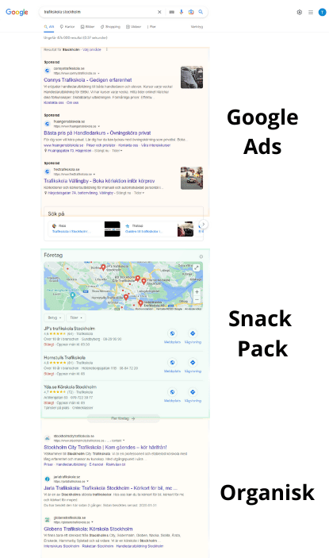
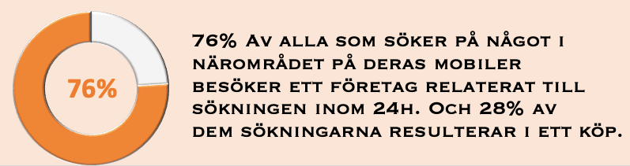

Digital Marknadsföring
SEO
SEM
Sociala Medier
Vi har uppnått arbetssätt och erbjuder smarta lösningar inom seo, sem och sociala medier.
Vi är alla bekanta med hur vi använder Google för att hitta en lokal restaurang eller den bästa frisören i staden. Som företagare med lokal närvaro är det avgörande att din verksamhet syns när potentiella kunder söker på Google. Vi går igenom hur lokal SEO fungerar och vilka åtgärder du kan vidta för att optimera ditt företags synlighet i Googles lokala sökresultat.

Begreppet "Lokal SEO" används kanske inte lika ofta som SEO eller sökmotoroptimering även fast ordet Lokal SEO varit ett begrepp i snart 20 år. Lokal SEO som namnet avslöjar handlar mycket om lokal närvaro i det organiska söket men även i kartdelen (Snack Pack) som dyker upp när du söker lokalt. Lokal SEO fokuserar på att synas när kunder söker efter lokala sökord, exempelvis "tandläkare Stockholm" eller "frisör Malmö".
För att optimera din webbplats för lokala sökresultat, måste du först välja rätt sökord. Du måste hitta sökord som är relevanta för din bransch och som dina potentiella kunder söker efter. Ett bra verktyg för att hitta relevanta sökord är Google Keyword Planner. Detta verktyg ger dig förslag på sökord och ger dig också en uppfattning om hur konkurrensutsatta dessa sökord är. Så en utförlig sökordsanalys är a-o.
När du har valt dina sökord, är det dags att optimera din webbplats för lokala sökresultat. Här är några viktiga steg:
Det är viktigt att ha sökordet i din URL. Detta gör det enklare för sökmotorerna att identifiera vad din webbplats handlar om.
Google My Business är en gratis tjänst som gör det enklare för ditt företag att synas på Google Maps och i Google-sökresultat. När du har skapat en profil, kommer ditt företagsinformation att visas på höger sida av sökresultaten när någon söker efter ditt företagsnamn eller en sökning relaterad till dina produkter eller tjänster.
Sökordet du har valt bör också inkluderas i din titel och meta-beskrivning. Detta ger sökmotorerna en bättre uppfattning om vad din webbplats handlar om och ökar chansen för högre ranking på sökresultatsidan.
Fler och fler människor använder mobiltelefoner för att söka efter produkter och tjänster, så det är viktigt att optimera webbplatsen mot mobiler. En mobiloptimerad webbplats ökar inte bara användarvänligheten, utan också synligheten på sökmotorer som Google, som har ett mobilanpassat först index.
Användning av interna och externa länkar att ha en bra länkstrategi på din webbplats kan också förbättra din ranking på sökmotorer. Interna länkar hjälper till att förbättra användarupplevelsen genom att leda besökare till relevant innehåll på din webbplats. Externa länkar från andra trovärdiga webbplatser till din webbplats ökar din trovärdighet och kan förbättra dina sökresultat på Google.
Det är viktigt att skapa lokalt relevant innehåll på din webbplats. Detta kan inkludera innehåll om lokala evenemang, blogginlägg om lokala frågor eller lokala produkter och tjänster. Lokalt relevant innehåll ökar chanserna för högre ranking på lokala sökresultat.
Sociala medier kan vara en kraftfull marknadsföringskanal för ditt företag. Här är några viktiga steg för att använda sociala medier för att marknadsföra ditt företag:
För att dra nytta av sociala medier för att marknadsföra ditt företag, är det viktigt att skapa ett starkt varumärke. Detta inkluderar att välja rätt logotyp och färgschema för ditt företag, och att använda samma designelement på alla dina sociala medier-konton.
Det finns många olika sociala medier-plattformar att välja mellan, inklusive Facebook, Instagram, Twitter och LinkedIn. Det är viktigt att välja de plattformar som är mest relevanta för din bransch och din målgrupp.
För att lyckas på sociala medier måste du skapa engagerande innehåll som är relevant för din målgrupp. Detta kan inkludera bilder, videor, blogginlägg eller andra typer av innehåll som är relevanta för dina följare.
För att skapa en stark närvaro på sociala medier är det viktigt att interagera med din målgrupp. Detta inkluderar att besvara frågor, kommentarer och meddelanden från följare och att aktivt engagera sig i samtal på sociala medier-plattformar.
Lokala kataloger och recensionssidor kan också hjälpa till att förbättra din lokala SEO optimering mot på sökmotorer och öka chanserna för fler kunder. Här är några viktiga steg för att använda lokala kataloger och recensionssidor:
Det finns många andra lokala kataloger och recensionssidor som du kan registrera ditt företag på, såsom Yelp, Eniro och Hitta.se. Detta ökar chansen för att potentiella kunder hittar ditt företag när de söker efter lokala produkter eller tjänster.
Recensioner från kunder på lokala kataloger och recensionssidor är viktiga för att öka din trovärdighet och synlighet på sökmotorer. Be dina kunder att lämna en recension om ditt företag på dessa plattformar.

SEO
SEM
Sociala Medier
Vi har uppnått arbetssätt och erbjuder smarta lösningar inom seo, sem och sociala medier.
Page Speed
Web Design
UI/UX
Vi levererar snabba hemsidor med hög prestanda.
PR
Influencer Marketing
Ett kostnadseffektivt sätt att skapa uppmärksamhet för era produkter och tjänster.
Vad är lokal SEO?
Lokal SEO är processen att optimera din online-närvaro för att attrahera mer affärer från relevanta lokala sökningar på Google och andra sökmotorer.
Varför är lokal SEO viktig?
Lokal SEO är viktig eftersom den hjälper ditt företag att bli synligt för lokala kunder som söker efter de produkter eller tjänster du erbjuder. Det kan ge ökad trafik, leda till fler försäljningar och öka ditt varumärkes kännedom.
Hur fungerar lokal SEO?
Lokal SEO fungerar genom att optimera din webbplats och ditt innehåll för specifika geografiska platser. Detta kan inkludera att använda lokalrelaterade sökord, skapa lokalt relevant innehåll och upprätta en stark närvaro på lokala företagsregister.
Vad är Google My Business och hur påverkar det lokal SEO?
Google My Business är ett kostnadsfritt verktyg från Google som gör det möjligt för företag att hantera sin online-närvaro på Google, inklusive sökning och Maps. Att ha en väl optimerad Google My Business-profil är en viktig del av lokal SEO.
Vad är "NAP" i lokal SEO?
NAP står för Name, Address, Phone Number. Det är viktigt för lokal SEO att ditt företags namn, adress och telefonnummer är konsekvent och korrekt listade över hela internet.
Kan jag göra lokal SEO själv?
Ja, du kan definitivt genomföra lokal SEO själv. Det kräver dock tid, ansträngning och en förståelse för SEO-principer. Många företag väljer att anlita en SEO-expert för att hjälpa till med denna process.